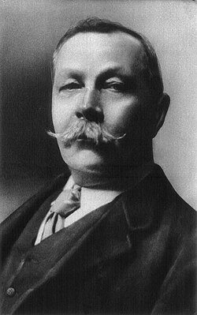
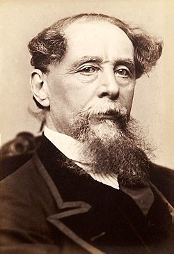
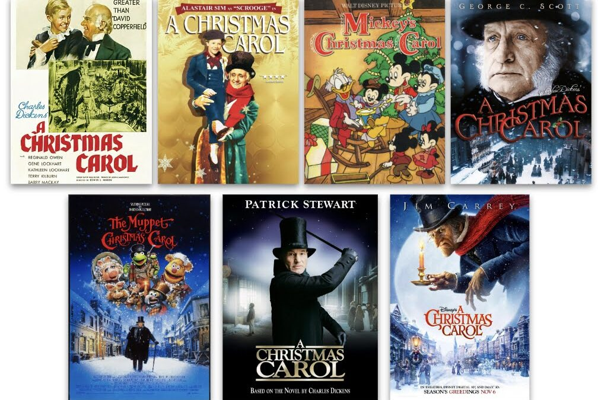
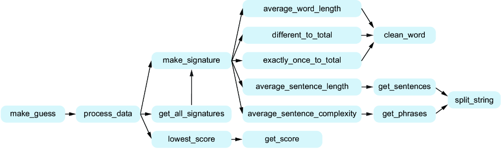

Depuração e Decomposição de Problemas
PASIA - Aula P.4
DAC - ICET - Universidade Federal de Lavras
02/09/2025
O conteúdo dessa aula é baseado no capítulo 11 do livro abaixo (e um pouquinho do capítulo 8).

Depuração
Encontrar e resolver bugs são algumas das principais atividades realizadas por um Engenheiro de Software.
- Os testes de código são essenciais para encontrarmos bugs em nossos sistemas.
- Mas, uma vez que eles são encontrados, como podemos resolvê-los?
Claro que podemos usar o Copilot para nos ajudar a resolver bugs.
- Mas é importante conseguirmos depurar nosso próprio código.
- Seja porque às vezes o Copilot não consegue nos ajudar.
- Seja porque às vezes é mais rápido e eficiente resolvermos o problema sozinhos, do que ficar gerando prompts e analisando as respostas do Copilot.
Existem diversas formas de depurar nosso código.
- Lendo o código.
- Explicando para alguém.
- Incluindo comandos
print()(que depois precisam ser removidos). - Ou usando um depurador (debugger).
- Que é a forma mais recomendada!
- Alunos geralmente têm preguiça de usar, mas, quando entram em um estágio ou emprego, costumam perceber que depuradores são ferramentas essenciais para o dia-a-dia de um desenvolvedor.
Vamos fazer um Quiz para verificar como (e se) vocês costumam usar depuradores.
- Quiz (obs.: apenas o professor consegue acessar esse link).
Como vocês não são alunos de início de curso, provavelmente já sabem usar um depurador.
- Para quem nunca usou o depurador do VS Code, é altamente recomendável que comece a usar.
- Você pode começar com esse tutorial bem simples que uso em PPOO.
- E há bastante material disponível na internet.
- Não vamos trabalhar isso nessa aula.
- E vou considerar que, aqueles que ainda não usam, vão tratar isso como tarefa de casa.
Programa de Identificação de Autoria
Na aula passada, sobre Decomposição de Problemas, fizemos o Design Top-Down de um programa para sugestões de correção.
- Vamos agora levar o design top-down para outro nível,
- praticando essa habilidade em um problema muito maior.
O processo, a princípio, será o mesmo:
- Vamos dividir o problema em subproblemas.
- E dividir novamente os subproblemas, se necessário.
- Vamos criar funções bem definidas, que recebam poucos parâmetros e retornem o resultado útil.
Mas, você verá que teremos uma novidade nesse caso:
- Criaremos funções que serão chamadas por mais de uma função.
- Evitando a replicação de código.
Programa de Identificação de Autoria
A ideia nessa aula é desenvolvermos um programa que tenta identificar o autor desconhecido de um texto misterioso.
- Vamos usar IA para fazer essa predição.
- Não vamos perder a oportunidade de usar IA em uma disciplina de Programação com Suporte de IA. 😁
Suponha que temos dois trechos de texto.
Trecho 1
I have not yet described to you the most singular part. About six years ago — to be exact, upon the 4th of May 1882 — an advertisement appeared in the Times asking for the address of Miss Mary Morstan and stating that it would be to her advantage to come forward. There was no name or address appended. I had at that time just entered the family of Mrs. Cecil Forrester in the capacity of governess. By her advice I published my address in the advertisement column. The same day there arrived through the post a small card-board box addressed to me, which I found to contain a very large and lustrous pearl. No word of writing was enclosed. Since then, every year upon the same date there has always appeared a similar box, containing a similar pearl, without any clue as to the sender. They have been pronounced by an expert to be of a rare variety and of considerable value. You can see for yourselves that they are very handsome.
Trecho 2
It was the Dover Road that lay on a Friday night late in November, before the first of the persons with whom this history has business. The Dover Road lay, as to him, beyond the Dover mail, as it lumbered up Shooter’s Hill. He walked up hill in the mire by the side of the mail, as the rest of the passen- gers did; not because they had the least relish for walking exercise, under the circumstances, but because the hill, and the harness, and the mud, and the mail, were all so heavy, that the horses had three times already come to a stop, besides once drawing the coach across the road, with the mutinous intent of taking it back to Blackheath. Reins and whip and coachman and guard, however, in combination, had read that article of war which forbade a purpose otherwise strongly in favour of the argument, that some brute animals are endued with Reason; and the team had capitulated and returned to their duty.
Suponha que alguém te pergunte se é provável que esses dois trechos tenham sido escritos pelo mesmo autor.
- Como você poderia responder a essa pergunta?
- Apenas com base nos textos - não vale jogar no Google 😜
Podemos assumir uma premissa razoável de que autores diferentes têm estilo de escrita diferentes.
- E que essas diferenças aparecem em métricas que podemos calcular a partir dos textos.
Como assim?
- Podemos notar, por exemplo, que o primeiro trecho tem frases mais curtas.
- E o segundo texto parece mais complexo se repararmos a quantidade de vírgulas e ponto-e-vírgulas.
Com base nessa avaliação poderíamos concluir que os textos, provavelmente, foram escritos por autores diferentes.
- O que é verdade nesse caso.
O autor do primeiro texto é Sir Arthur Conan Doyle.

E o autor do segundo texto é Charles Dickens.
 
Nesse caso acertamos que são autores diferentes, mas o exemplo foi escolhido a dedo 🤭
- Pode ser, por exemplo, que um mesmo autor escreva diferente em trechos ou livros diferentes.
- Mas, como não vamos fazer um programa perfeito, tudo bem.
Ideia Geral
Baseado no princípio desse exemplo, suponha que tenhamos:
- um conjunto de textos de autores conhecidos.
- e o texto de um autor desconhecido
- Poderia ser uma obra nunca publicada, que foi encontrada por acaso com um colecionador, por exemplo.
Precisamos de uma forma que nos permita comparar o estilo de escrita dos autores conhecidos com o do autor desconhecido.
Ideia Geral
Nossa estratégia será construir uma “impressão digital” (ou “assinatura”) do estilo de escrita de cada autor.
- Com base em um livro que ele tenha escrito.
- Essa impressão digital seria baseada em métricas que conseguimos calcular a partir do texto.
- Como o número médio de palavras por frase e a complexidade média das frases.
Ideia Geral
Usaríamos o mesmo processo para construir a impressão digital do texto de autor desconhecido.
- E compararíamos a impressão digital do autor desconhecido com a dos autores conhecidos.
- Aquele que tiver a impressão digital mais próxima, seria o autor mais provável do texto desconhecido.
Limitações
Claro que o texto de autor desconhecido pode ser de um autor completamente novo.
- Ou pode ser que nossas métricas não capturem bem o estilo de escrita de cada autor.
- Ou ainda que um mesmo autor escreva livros diferentes com estilos diferentes.
Portanto, nosso programa não estará pronto para ser lançado no mercado 🙃
- De todo modo, dada a dificuldade da tarefa, você ficará surpreso com o resultado que conseguiremos alcançar.
A ideia nessa aula é que você mesmo faça o design top-down do programa.
- E use o Copilot para ajudar a implementar as funções que você definir.
O livro da disciplina vai construindo o design e, à medida que avança, vai acrescentando mais detalhes sobre como o programa deve funcionar.
- Como quais métricas usar, por exemplo.
- Mas como aqui é você quem fará o design, é necessário que você conheça esses detalhes antes de começar a fazer o design.
Definições para o Programa de Identificação de Autoria
Textos disponíveis
O projeto inicial disponibilizado tem uma pasta dados.
- Dentro da pasta há uma pasta chamada
autores_conhecidoscom 5 arquivos de texto.- Cada arquivo é um livro diferente, escrito por um autor diferente.
- O título do arquivo é o nome do autor.
- Há também 4 arquivos de autores desconhecidos.
- Cada arquivo é um trecho de texto, que pode ter sido escrito por qualquer um dos autores conhecidos.
- O nome do arquivo não indica o autor.
Métricas
A ideia é utilizar as seguintes métricas para construir a impressão digital de cada autor:
- tamanho médio das palavras
- número de palavras diferentes dividido pelo número total de palavras
- número de palavras usadas exatamente uma vez dividido pelo número total de palavras
- número médio de palavras por frase
- complexidade média das frases
A seguir vamos detalhar como calcular cada uma dessas métricas.
Tamanho médio das palavras
A ideia aqui é diferenciar autores que usam, em média, palavras mais curtas ou mais longas.
- Calculamos o número total de letras das palavras e o número total de palavras do texto.
- E dividimos o primeiro pelo segundo.
Exemplo: “A chuva caía. O guarda-chuva tinha ficado em casa.”
- São 40 letras e 9 palavras com um total.
- Tamanho médio das palavras: 40 / 9 = 4.44
- Obs.: para simplificar estamos considerando que o hífen conta como letra.
Número de palavras diferentes dividido pelo número total de palavras
A ideia dessa métrica é identificar autores que costumam ser repetitivos ou não.
- Calculamos o número de palavras diferentes que aparecem.
- E dividimos pelo número total de palavras do texto.
Ex.: Uma pérola! Uma pérola! Uma pérola brilhante! Rara. Que belo achado.
- Total de palavras: 10
- Palavras diferentes: 7 (uma, pérola, brilhante, rara, que, belo, achado)
- Resultado da métrica: 7 / 10 = 0.7
Número de palavras usadas exatamente uma vez dividido pelo número total de palavras
Pode ser que alguns autores usem muitas palavras apenas uma vez, enquanto outros tendem a repetir mais as palavras.
- Vamos calcular o número de palavras que aparecem exatamente uma vez no texto.
- E dividir pelo número total de palavras do texto.
Exemplo: Uma pérola! Uma pérola! Uma pérola brilhante! Rara. Que belo achado.
- Número total de palavras: 10
- Palavras usadas exatamente uma vez: 5 (brilhante, rara, que, belo, achado)
- Resultado da métrica: 5 / 10 = 0.5
Número médio de palavras por frase
A ideia dessa métrica é identificar se o autor costuma escrever frases mais longas ou mais curtas.
- Calculamos o número total de palavras e o número total de frases do texto.
- E dividimos o primeiro pelo segundo.
Exemplo: “A chuva caía. O guarda-chuva tinha ficado em casa.”
- Número total de palavras: 9
- Número total de frases: 2
- Número médio de palavras por frase: 9 / 2 = 4.5
Complexidade média das frases
Comentamos no exemplo inicial que um trecho de texto tinha frases mais curtas e outro mais longas.
- Uma maneira que temos de medir a complexidade é verificar se as frases têm mais de uma oração.
Exemplo: “No mesmo dia chegou uma carta endereçada a mim, que parecia conter algo importante. Mas não tive coragem de abri-la.”
- Veja que a primeira frase tem duas orações, separadas pela vírgula.
- Já a segunda frase tem apenas uma oração.
Complexidade média das frases
Como seria muito complicado realmente tentar identificar orações, vamos usar uma aproximação simples:
- Vamos considerar que toda vírgula, ponto-e-vírgula ou dois-pontos indicam a separação de orações de uma frase.
- E vamos calcular o total de orações dividido pelo total de frases do texto.
- No exemplo citado, o resultado da métrica seria: 3 / 2 = 1.5
A impressão digital de cada autor será então dada pelo conjunto de métricas calculada a partir de um livro que ele tenha escrito.
- Em Aprendizado de Máquina, nós chamaríamos esse conjunto de vetor de características (features).
- Portanto, ela será dada por uma lista de 5 números, com os valores de cada métrica na ordem que definimos.
- Exemplo:
[4.44, 0.7, 0.5, 4.5, 1.5]
- Exemplo:
- tamanho médio das palavras
- número de palavras diferentes dividido pelo número total de palavras
- número de palavras usadas exatamente uma vez dividido pelo número total de palavras
- número médio de palavras por frase
- complexidade média das frases
Identificando o autor desconhecido
Para identificar o autor desconhecido de um texto, faremos o seguinte:
- Calcularemos a impressão digital de cada autor conhecido.
- Calcularemos a impressão digital do texto de autor desconhecido.
- E a compararemos com a impressão digital de cada autor conhecido.
- O autor conhecido cuja impressão digital for mais próxima, será o autor mais provável do texto desconhecido.
Mas como será feita a comparação entre as impressões digitais?
Identificando o autor desconhecido
Suponha que estamos comparando a impressão digital [4.44, 0.7, 0.5, 4.5, 1.5] com uma impressão digital de um autor desconhecido dada por [4.0, 0.5, 0.7, 4.0, 1.9].
- Vamos calcular a diferença, em módulo, entre cada métrica.
- O resultado seria
[0.44, 0.2, 0.2, 0.5, 0.4].
- O resultado seria
- E, em seguida, vamos calcular a soma ponderada dessas diferenças.
- Os pesos da soma seria:
[11, 33, 50, 0.4, 4]. - O resultado seria então
(0.44*11 + 0.2*33 + 0.2*50 + 0.5*0.4 + 0.4*4) = 23.24.
- Os pesos da soma seria:
Identificando o autor desconhecido
Mas de onde veio essa lista de pesos?
- Os autores do livro aplicaram esse exercício ao longo do tempo.
- E, empiricamente, descobriram que esses pesos funcionam bem para esse problema.
Obs.: em uma aplicação profissional de Aprendizado de Máquina, esses pesos seriam aprendidos a partir de um conjunto de dados de treinamento.
Identificando o autor desconhecido
Voltando à identificação do autor desconhecido:
- Vimos que a comparação entre duas impressões digitais resulta em um número (score).
- E quanto menor esse número, menor a diferença entre as impressões digitais, certo?
- Portanto, o autor conhecido cuja comparação resulte no menor score será o autor mais provável do texto desconhecido.
Dica para a fase de design
Uma das operações necessárias é a contagem de palavras.
- Para isso, podemos usar a função
split()da classestr. - Exemplo:
- Usando função
split()no trecho “A chuva caía. O guarda-chuva tinha ficado em casa.” - Obteríamos as palavras:
["A", "chuva", "caía.", "O", "guarda-chuva", "tinha", "ficado", "em", "casa."]
- Usando função
- Mas veja que as palavras “caía.” e “caía” seriam consideradas diferentes.
- Precisamos então tratar isso, removendo as pontuações das palavras.
- Mas devemos tomar cuidado para não remover o hífen, que faz parte da palavra (como na palavra “guarda-chuva”).
- Bastaria remover as pontuações apenas do início e do fim das palavras.
Design top-down do Programa de Identificação de Autoria
É hora então de construir o design top-down do programa.
- Recomendo que façam em duplas, mas podem fazer individualmente se preferirem.
- Lembre-se que o objetivo é praticar a habilidade de decomposição de problemas.
- Dica: provavelmente você encontrará uma ou mais funções que são chamadas por mais de uma função.
No próximo slide vou apresentar o design feito pelos autores do livro.
- Mas atenção: é muito importante que você mesmo faça o design.
- Não adianta copiar o design de alguém ou usar o design mostrado a seguir.
- Somente depois que terminar o design, antes de implementar, você pode comparar com o design mostrado a seguir.
- E ver se há algo que você não tinha pensado.
- Lembre-se que o design não precisa ser igual ao do livro.
- A ideia é apenas ajudar a identificar se você esqueceu de algo importante.
Design dos autores do livro
Você já terminou mesmo seu design? Tem certeza?

Implementação do Programa de Identificação de Autoria
Agora é hora de implementar o programa.
- A ideia é usar o Copilot para ajudar na implementação.
- Você precisará também escrever testes para suas funções.
- Pelo menos um caso de teste para cada função.
- O Copilot pode ajudar nisso também. Mas você precisa verificar se os testes estão corretos.
- Dica: ao escrever o prompt/docstring de cada função, pense que ela poderia ser reutilizada futuramente em outros programas
Como saber se o programa funciona corretamente?
Você verá que os arquivos de autores desconhecidos têm o nome do autor dentro do arquivo.
- Portanto, você poderá verificar se o programa está funcionando corretamente. 😉
- E, claro, seu programa não pode usar essa informação para fazer a predição. 😏
O exercício deve ser entregue no Campus Virtual até a data indicada.